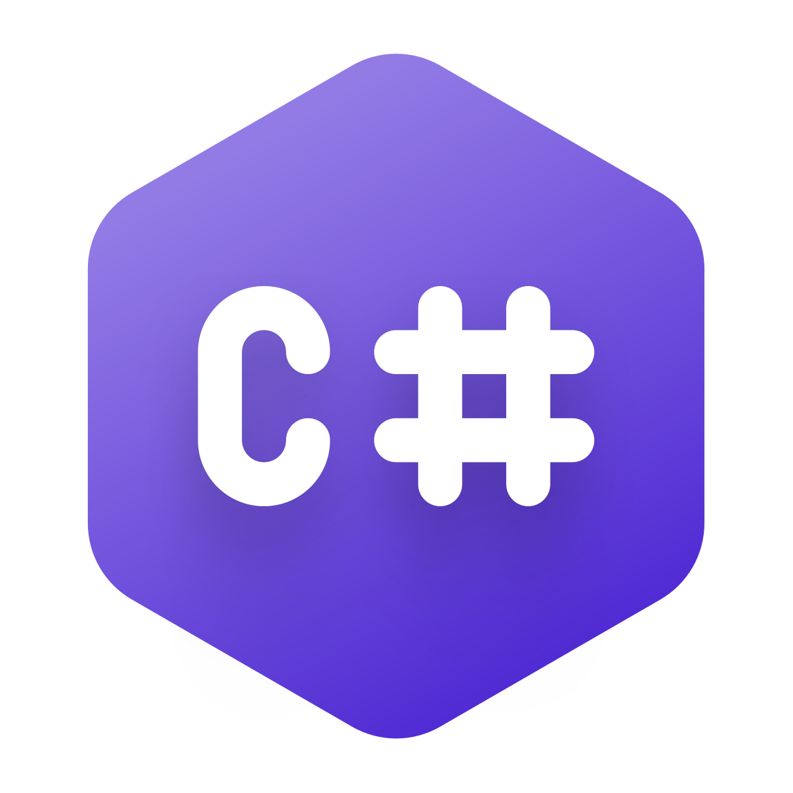

C# (C-sharp)
A C# egy modern, objektum-orientált programozási nyelv, amelyet a Microsoft fejlesztett
ki 2000-ben, részeként a .NET keretrendszernek. A nyelv tervezésekor a fejlesztők arra törekedtek, hogy a C#
könnyen tanulható és használható legyen, miközben erős és sokoldalú marad. Ennek eredményeként a c# széles
körben alkalmazható, legyen szó webes alkalmazások, asztali szoftverek, mobilalkalmazások vagy játékok
fejlesztéséről. A C# szintaxisa sokban hasonlít más népszerű programozási nyelvekére, mint például a C++
vagy a Java, így a programozók könnyen áttérhetnek rá. Támogatja az objektum-orientált programozási elveket,
mint például az öröklődést, a polimorfizmust és az enkapszulációt, ami lehetővé teszi az újrafelhasználható
és karbantartható kód írását. A C# nagy előnye a .NET keretrendszerrel való szoros integráció, ami számos
beépített funkciót és könyvtárat biztosít a fejlesztők számára, így gyorsítva és egyszerűsítve a fejlesztési
folyamatot. Emellett a C# folyamatosan fejlődik és új funkciókkal bővül, amelyek még hatékonyabbá teszik a
fejlesztést. Összességében a C# egy erős és sokoldalú nyelv, amely ideális választás mind kezdő, mind
tapasztalt fejlesztők számára, akik hatékony és modern alkalmazásokat szeretnének készíteni.

Csharp logo
Csharp